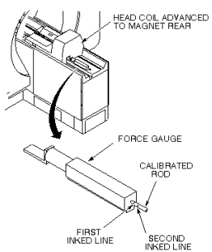
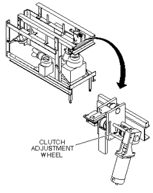

Operating Documentation
Direction 5133315-3, Rev# 14
Signa EXCITE HD 1.5T Service Methods
Module Version 1.0, Version Date 5/3/07
Operating Documentation |
| Required Persons | Preliminary Reqs | Procedure | Finalization |
|---|---|---|---|
| 1 |
| Item | Qty | Effectivity | Part# | Manufacturer | |
|---|---|---|---|---|---|
| Longitudinal Drive Force Gauge | 1 | - | 46-307500G1 | - | |
| Longitudinal Drive Motor | 1 | - | MG3 A7 | - | |
| Longitudinal Drive Belt | 1 | - | 46-282388P1 | - | |
Position head coil carriage to a location inside magnet bore.
Position force gauge on top of longitudinal drive belt at very end of belt track, magnet rear (see Illustration 1).
Illustration 1: CARRIAGE CLUTCH TENSION

Push calibrated rod of force gauge all the way into body of force gauge (fully retracted).
Press IN SLOW button on magnet enclosure until head coil comes to a stop against force gauge. The force of the advancing head coil causes the force gauge calibrated rod to protrude from rear of force gauge.
Inspect inked calibration lines on calibrated rod. If first inked line is not visible (clutch tension is too small), or if portion of rod behind second inked line is visible (clutch tension is too great), clutch tension requires adjustment; continue with procedure. If rod protrudes such that only the portion between the two inked lines is visible, no further adjustment is needed.
Remove rear pedestal cover to gain access to clutch tension adjustment wheel. See Illustration 2.
Illustration 2: LONG DRIVE CLUTCH ADJUST WHEEL

Turn clutch adjustment wheel clockwise to tighten (increase tension) or counterclockwise to loosen (decrease tension).
Repeat steps 1 through 5 to determine if further calibration is required.
Replace cover on rear pedestal.
No finalization steps.